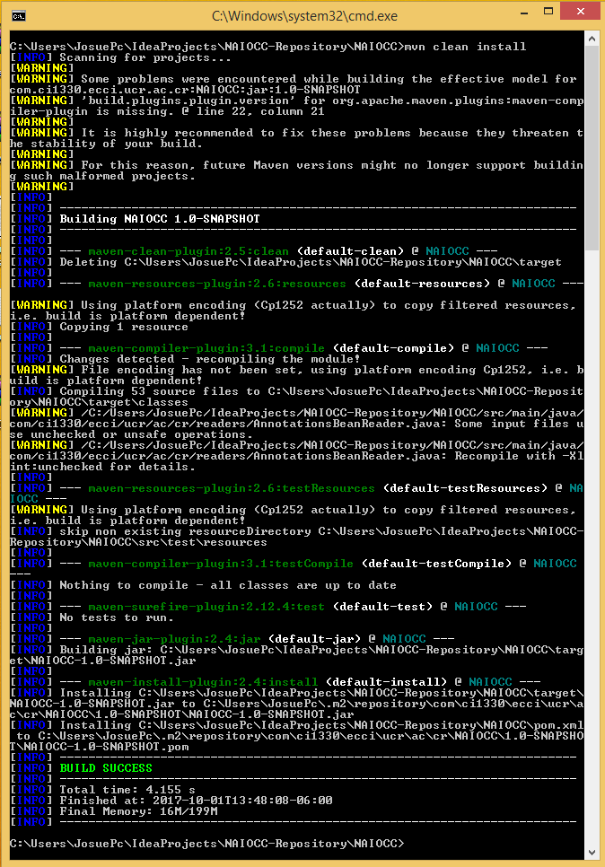
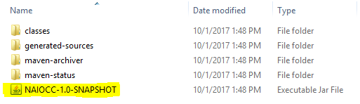

Get started
Software engineering is a Computer Science branch, based on the two concepts software and engineering, and consisting on a set of methods, models, tools, and techniques that facilitate software development.
One of the main goals of software engineers is to reduce this process complexity, which is naturally very high. Software engineering has a lot of design patterns and programming models that can be used when creating software systems. One of the most used and famous design patterns is Dependency Injection. Dependency injection removes the dependencies between objects from their internal composition and handles them by itself in order to separate the programs in more parts, making a program’s objects work independently from others.
In software engineering Inversion of Control is very important and changes the normal flow in which programs are developed. Inversion of control consists in an inverted flow of the program execution respectful to traditional programming methods, in which the developer no longer holds the main control of the program, it is driven by a framework. In this way, the framework is in charge of creating and controlling the dependencies of each object and handle them to it when needed, increasing the modularity.
An Inversion of Control container is a very complex program that requires a variety of elaborated algorithms and patterns to successfully perform its job. The term was popularized in 1999 by the computer scientist Stefano Mazzochi and since then, different frameworks based on this principle have been developed.
Description
NAIoCC (Not Another Inversion of Control Container) provides the basic characteristics an IoC container offers, but in a well implemented environment with high quality development. NAIoCC can be obtained from the com.ci1330.ecci.ucr.ac.cr package and its main components are the XMLFactory and AnnotationsFactory.
The XMLFactory is used to specify the configuration in the XML file, whilst the AnnotationsFactory is its complement which allows to create the configuration via Java Annotations. Both of them create and share the container, which holds all the objects that will be created.
The objects that you create are called beans, and they are managed by NAIoCC. Beans metadata is obtained from the configuration you specify, and it is used to create, instantiate and manage all the beans along with their dependencies. You just need to provide the properties for each bean, and NAIoCC will take care of all the process, in order to return you the needed beans already assembled, whenever you need them.
Bean Basic Concepts
Understanding the following concepts makes easier NAIoCC's use:
- Bean is an abstract object, for the dependency injection, that is created by the bean factory and it is saved in the inversion of control container. It has some properties: id, class, scope, init, destroy, lazy-generation and autowire. It is obligatory.
- Id is the unique identification for each bean. It is obligatory. Its value can not be repeated in different beans.
- Scope specifies the scope of the bean. It is not obligatory. Its value can be Singleton, which is the default value, or Prototype. Singleton means that just one bean is instantiated and all the requests for that bean use the same instance. Prototype consists in creating a new instance of the bean each time it is requested.
- Init consists in the initialization method for a bean. It is not obligatory. This method is called when the bean is instantiated.
- Destroy consists in the destruction method for a bean. It is not obligatory. This method is called when the bean is destroyed.
- Lazy-generation determines if the bean is instantiated when the container is created or when the bean is requested by a user, in the case that its scope is Singleton. It is not obligatory and by default it is set to false. Its value can be the same for different beans. If the value is (true), the bean is instantiated until it is requested, otherwise (false) the bean is instantiated when the container is created. For Prototype scopes, it behaves the same way as normal since beans are instantiated when requested.
- Autowire specifies the automatic way of wiring the dependencies in a bean. It is not obligatory. Its value can be repeated in different beans. The value can be set to byName, byType, constructor or none, by default. It can be overridden, when it is specified in an attribute or param of the constructor specifically.
- Attribute specifies a bean’s attribute, so that it is injected through ”setter” methods. It is not obligatory. There can be multiple attributes defined in a bean. It has a name and ref or value, if its type is primitive
- Atomic-autowire specifies the automatic way of wiring the dependencies for a property in a bean. It is not obligatory. Its value can be repeated in different beans. The value can be set to byName, byType, or none, by default.
- Constructor is used to define constructor injection and specify its parameters. It is not obligatory. It is unique for a bean, therefore there can only be one Constructor tag inside a bean’s configuration.
- Param identifies a constructor’s argument. It is obligatory. It can has type, index or both. It can also has value or ref.
Functionality
The NAIoCC supports the following functionality:
- Dependency injection:
Dependency injection consists on NAIoCC taking care of providing the beans with their dependencies and injecting them at the moment of instantiation, when you request for a bean. This is one of the main concepts that conforms the base of the Inversion of Control paradigm, since the control is inverted and the container is in charge of assembling the bean, not you from the class itself.
- Setter: Setter injection is based on the injection of a bean's dependencies via setter methods. In this way, all the specified attributes of a bean in the configuration are injected automatically using their corresponding setter methods, which NAIoCC takes care of associating and invoking the correct methods for each attribute.
- Constructor: Constructor injection is based on the injection of a bean's dependencies via its constructor. In this way, NAIoCC creates the bean's instance with the correct constructor defined by the configuration, and injects the dependencies with the correct parameters.
- Scope:
The scope functionality establishes the bean's limit of being able to have just one instance or multiple, depending on your needs.
- Singleton: The Singleton scope indicates that a bean can only be instantiated once, and every request you do of that bean will return you the same and unique instance the bean has.
- Prototype: The Prototype scope specifies that a bean can be instantiated multiple times, which means that every request you do of a bean with this scope, will create a new instance of it.
- Lifecycle:
In NAIoCC, beans have a life cycle, which consists on their process of being instantiated throughout being destroyed.
- Initialization: The initialization cycle is based on the possibility of a bean to do certain defined operations when it is instantiated. In this way, an initialization method can be provided so that it is called when the bean is instantiated.
- Destroy: The destruction cycle is based on the possibility of a bean to do certain defined operations when it is destroyed. In this way, a destroy method can be provided so that it is called before the bean is destroyed.
- Autowiring:
Autowiring refers to the functionality of automatically wiring a bean's dependencies before instantiation, based on a criteria defined in the configuration of the bean.
- By Name: Autowiring "byName" consists on wiring the bean's dependencies by determining the object to inject based on searching for a bean in the container that has the specified name as its id.
- By Type: Autowiring "byType" consists on wiring the bean's dependencies by determining the object to inject based on searching for a bean in the container of the same type as the one specified.
- Configuration Format:
The configuration format is the way in which the beans' properties can be indicated for NAIoCC to read them and define the correct metadata for each bean, to use it later for bean assembly purposes.
- XML: XML is the way in which the configuration can be stated in an XML file. When creating the instance of XMLFactory, this file must be inserted as its parameter.
- Annotations: Java annotations is the way in which the configuration can be stated in the Java Classes. When creating the instance of AnnotationsFactory, a class path may be inserted as parameter for NAIoCC to read its configuration, or specify them later. Java annotations can also be used and specified via the XML file.
- Extra features:
These features correspond to different functionality but are important to be specified.
- Lazy Loading: Lazy Loading consists on altering the scope of a bean, and establishing that it will not be instantiated in any way, until you request it. Even if the scope is set to Singleton, if Lazy Loading is indicated, the bean acts like a Prototype.
- Stereotype Annotations: Stereotype annotations are extra annotations that change the conceptual layer of beans defined with Java annotations. Normally, a class is indicated to be a bean with the @Bean annotation. However, to facilitate understanding and a better way of modelling a system, the annotations @Service, @Repository and @Controller are provided.
XML Configuration
To use the container the user has to define the beans and the information to create them(metadata) in an XML file. Also user has to make make a XML Bean Factory.
The following are some specific concepts for XML Configuration
- Name the name of the attribute to inject. It is obligatory. Its value can not be repeated inside the same bean.
- Type identifies the property’s type of a constructor’s parameter to make the injection. It is not obligatory.
- Index identifies the parameter’s index of a constructor’s parameter to make the injection. It is not obligatory, and its value must be unique inside a bean’s constructor.
- Value identifies the attribute’s value or argument’s value. It is not obligatory. Its value is not unique.
- Ref makes reference to a declared bean ID for any other bean in theXML. It is not obligatory. The reference is unique but can be used by multiple beans.
- Annotations Classes Indicates that there are annotations in the specified. There can be just an annotationsClasses tag in the XML configuration.
- Classtag, in Annotations Classes, determines a class which contains annotations. It has an attribute called path, which specifies the path of the respective class.
- Path has the name of the class with annotations. It can be just one per class tag.
XML Structure:
Bean:
<xml version = "1.0" encoding = "UTF-8"?>
<beans >
<bean id = "beanId" class = "package.path.class">
</bean>
</beans>
Scope:
<xml version = "1.0" encoding = "UTF-8"?>
<beans >
<bean id = "beanId" class = "package.path.class" scope="Singleton/Prototype">
</bean>
</beans>
Init:
<xml version = "1.0" encoding = "UTF-8"?>
<beans init="defaultInitMethod">
<bean id = "beanId" class = "package.path.class" init="methodName">
</bean>
</beans>
Destroy:
<xml version = "1.0" encoding = "UTF-8"?>
<beans destroy="defaultDestroyMethod">
<bean id = "beanId" class = "package.path.class" destroy="methodName">
</bean>
</beans>
Lazy-generation:
<xml version = "1.0" encoding = "UTF-8"?>
<beans >
<bean id = "beanId" class = "package.path.class" lazy-generation="true/false">
</bean>
</beans>
Autowire:
<xml version = "1.0" encoding = "UTF-8"?>
<beans >
<bean id = "beanId" class = "package.path.class" autowire="byName/byType/none">
</bean>
</beans>
Constructor:
<xml version = "1.0" encoding = "UTF-8"?>
<beans >
<bean id = "beanId" class = "package.path.class"
<constructor>
</constructor>
</bean>
</beans>
Param:
<xml version = "1.0" encoding = "UTF-8"?>
<beans >
<bean id = "beanId" class = "package.path.class"
<constructor>
<param type="package.path.class" index="numberIndex" value="valor"/ref="beanId" />
<param ref="beanId" atomic-autowire="byName/byType"/>
<param type="package.path.class" atomic-autowire="byName/byType"/>
</constructor>
</bean>
</beans>
Attribute:
<xml version = "1.0" encoding = "UTF-8"?>
<beans >
<bean id = "beanId" class = "package.path.class">
<attribute name="nombreAtr" value="valor"/ref="beanId" atomic-autowire="byName/byType"/>
<attribute name="nombreAtr" atomic-autowire="byName/byType"/>
</bean>
</beans>
Annotations Classes:
<xml version = "1.0" encoding = "UTF-8"?>
<beans>
<bean id = "beanId" class = "package.path.class"
</bean>
<annotationsClasses> <class path="package.path.class" />
</annotationsClasses>
</beans>
Summary:
<xml version = "1.0" encoding = "UTF-8"?>
<beans init="defaultInitMethod" destroy="defaultDestroyMethod">
<bean id = "beanId" class = "package.path.class"
scope="Singleton/Prototype"
init="methodName" destroy="methodName"
lazy-generation="true/false"
autowire="byName/byType/none">
<constructor>
<param type="package.path.class"
index="numberIndex"
value="valor"/ref="beanId" />
<param ref="beanId" atomic-autowire="byName/byType"/>
<param type="package.path.class" atomic-autowire="byName/byType"/>
</constructor>
<attribute name="nombreAtr" value="valor"/ref="beanId" atomic-autowire="byName/byType"/>
<attribute name="nombreAtr" atomic-autowire="byName/byType"/>
</bean>
<annotationsClasses> <class path="package.path.class" />
</annotationsClasses>
</beans>
Annotations Configuration
The annotations configuration can be used alongside XML configuration or making an Annotations Bean Factory. The following are the annotations and its structure:
Bean:
@Bean("beanId")
public class BeanClass{
...
}
Scope:
@Bean("beanId")
@Scope("Singleton")/@Scope("Prototype")
public class BeanClass{
...
}
Init:
@Bean(id)
public class BeanClass{
@Init
public void initMethod(){
...
}
}
Destroy:
@Bean(id)
public class BeanClass{
@Destroy
public void destroyMethod(){
...
}
}
Lazy-generation:
@Bean("beanId")
@Lazy
public class BeanClass{
...
}
Class Autowire:
@Bean("beanId")
@ClassAutowire
public class BeanClass{
...
}
Attribute:
@Bean("beanId")
public class BeanClass{
@Attribute(attributeValue)/@Attribute(value=attributeValue)/@Attribute(ref="beanIdReferenced")
private attributeType attributeName;
public void setAttributeName(){
...
}
}
Atomic Autowire:
@Bean("beanId")
public class BeanClass{
@AtomicAutowire()/@AtomicAutowire("byName")/@AtomicAutowire("byType")
private attributeType attributeName;
public void setAttributeName(){
...
}
}
Constructor:
@Bean(id)
public class BeanClass{
@Constructor
public BeanClass(...){
...
}
}
Parameter:
@Bean(id)
public class BeanClass{
@Constructor
@Parameter(value=paramValue)/@Parameter(ref="beanIdReferenced")
public BeanClass(...){
...
}
}
Installation
- Hardware Requirements NAIoCC was developed using 64 bits computer systems, with an average RAM of 8 GB and sufficient hard drive space. Nonetheless, NAIoCC can be used in any computer system that operates correctly, independently of its architecture, RAM and hard drive properties.
- Software Requirements NAIoCC was developed using the Java programming language and a variety of its libraries. Java can be used in multiple platforms and offers a lot of compatibility. In order to use NAIoCC, the computer system from where it is going to be used should have an operating system like Windows, with Windows XP version or a newer one; Linux, or MAC OS X. Moreover, when using NaIOCC it is also recommended to have a Java IDE, such as IntelliJ, which was the one primarily used for NAIoCC's development.
- Compilation In order to compile a project that uses NAIoCC, the package's jar should firstly be imported. One of the easiest ways to do this is using Maven, to manage the project's dependencies, and including NAIoCC's dependency in the configuration XML file. NAIoCC's maven dependency is the following:
<groupId>com.ci1330.ecci.ucr.ac.cr</groupId> <artifactId>NAIoCC</artifactId> <version>1.0-SNAPSHOT</version>Or the other way is making the NAIoCC's jar:  
Some Examples
The following is the XML Configuration of the example:
<?xml version = "1.0" encoding = "UTF-8"?>
<beans init="defaultInitMethod" destroy="defaultDestroyMethod">
<bean id = "triangulo" class = "com.ci1330.ecci.ucr.ac.cr.ejemplos.Triangle" scope="Singleton"
lazy-generation="true" init = "init" destroy="destroy" autowire="constructor">
<attribute name="triangleCenter" atomic-autowire="byName"/>
</bean>
<bean id = "pointA" class = "com.ci1330.ecci.ucr.ac.cr.ejemplos.Point" scope="Prototype">
<constructor>
<param type="int" index="0" value="2"/>
<param type="int" index="1" value="4"/>
<param type="int" index="2" value="6"/>
</constructor>
</bean>
<bean id = "pointB" class = "com.ci1330.ecci.ucr.ac.cr.ejemplos.Point" scope="Prototype">
<attribute name="x" value="6"/>
<attribute name="y" value="8"/>
<attribute name="z" value="10"/>
</bean>
<bean id = "pointC" class = "com.ci1330.ecci.ucr.ac.cr.ejemplos.Point" scope="Prototype">
<attribute name="x" value="12"/>
<attribute name="y" value="14"/>
<attribute name="z" value="16"/>
</bean>
<bean id = "triangleCenter" class = "com.ci1330.ecci.ucr.ac.cr.ejemplos.Point" scope="Prototype">
<attribute name="x" value="8"/>
<attribute name="y" value="8"/>
<attribute name="z" value="8"/>
</bean>
<bean id = "person" class = "com.ci1330.ecci.ucr.ac.cr.ejemplos.Person" scope="Prototype">
<attribute name="triangle" atomic-autowire="byType"/>
<attribute name="bicycle" atomic-autowire="byName"/>
<constructor>
<param type="boolean" value="true"/>
<param type="java.lang.String" value="costarican"/>
<param type="int" value="175489239"/>
</constructor>
<attribute name="name" value="Josue"/>
</bean>
<bean id = "bicycle" class = "com.ci1330.ecci.ucr.ac.cr.ejemplos.Bicycle" scope="Singleton"
autowire="byName">
</bean>
<bean id = "firstWheel" class = "com.ci1330.ecci.ucr.ac.cr.ejemplos.Wheel" scope="Singleton"
autowire="byType">
</bean>
<bean id = "secondWheel" class = "com.ci1330.ecci.ucr.ac.cr.ejemplos.Wheel" scope="Singleton">
<constructor>
<param type="com.ci1330.ecci.ucr.ac.cr.ejemplos.Rim" atomic-autowire="byType"/>
</constructor>
</bean>
<bean id = "wheelRim" class = "com.ci1330.ecci.ucr.ac.cr.ejemplos.Rim" scope="Singleton">
<constructor>
<param ref="rimBrand" atomic-autowire="byName"/>
</constructor>
</bean>
<bean id = "rimBrand" class = "com.ci1330.ecci.ucr.ac.cr.ejemplos.Brand" scope="Singleton">
<attribute name="name" value="BMW"/>
</bean>
<annotationsClasses>
<class path="com.ci1330.ecci.ucr.ac.cr.ejemplos.Pod" />
<class path="com.ci1330.ecci.ucr.ac.cr.ejemplos.Rose"/>
<class path="com.ci1330.ecci.ucr.ac.cr.ejemplos.Tulip"/>
<class path="com.ci1330.ecci.ucr.ac.cr.ejemplos.Leaf"/>
</annotationsClasses>
</beans>
Credits
The source code of this HTML file, the style css and the JavaScript code was taken from: https://www.behance.net/gallery/33791338/VDOC-Free-Responsive-Documentation-HTML-Template